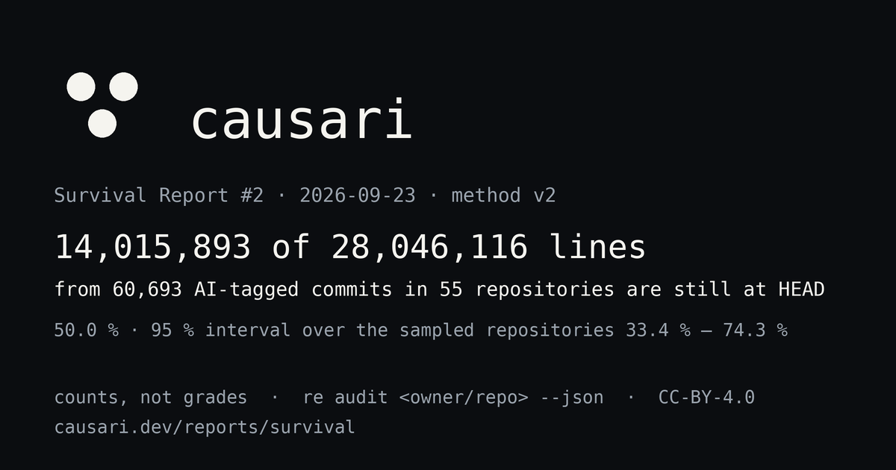

survival report #2 · 2026-09-23 · method v2 · causari 0.2.0 · unranked
Survival Report #2
14,015,893 of 28,046,116 lines introduced by 60,693 AI-tagged commits in 55 open-source repositories are still at HEAD (50.0 %). 95 % interval over the sampled repositories: 33.4 % to 74.3 %. These are counts, not grades. There is no rank, no colour and no verdict on this page; rows are alphabetical. Every number links to the audit bytes behind it and the method and its limits are public.
{kind=link}

Repositories
Alphabetical. VERIFIED commits only; PROBABLE counts are shown but never summed. Capped: no commit weighs more than the cap. Median per commit: the middle commit's own ratio. Largest commit: share of introduced lines from the single largest commit. Every number links to the audit bytes of this run; re audit <owner/repo> --json reproduces a row. Each repository name links to its own page: history across reports and a badge.
Measured but not aggregated
Fewer than 5 AI-tagged commits: the counts are published, the ratio is not, and the repository is left out of the aggregate above.
| Repository | Commits | AI-tagged | Lines introduced | Still at HEAD | Ratio |
|---|---|---|---|---|---|
| openai/openai-agents-python | 2,230 | 2 | 94,176 | 94,152 | n < 5 |
| openai/openai-python | 1,628 | 3 | 63 | 61 | n < 5 |
| stackblitz/bolt.new | 101 | 0 | 0 | 0 | n < 5 |
By agent, across the aggregated repositories
Alphabetical. A commit is attributed to the agent its metadata names; one agent per commit.
| Agent | Repositories | Commits | Lines introduced | Still at HEAD | Line-weighted |
|---|---|---|---|---|---|
| ai | 4 | 59 | 8,280 | 7,152 | 86.4 % |
| aider | 4 | 11,167 | 375,563 | 235,811 | 62.8 % |
| claude-code | 47 | 16,511 | 12,700,663 | 5,794,276 | 45.6 % |
| copilot | 4 | 3,927 | 250,780 | 147,792 | 58.9 % |
| cursor | 35 | 1,203 | 4,329,968 | 785,174 | 18.1 % |
| devin | 12 | 7,415 | 2,166,047 | 1,615,028 | 74.6 % |
| gemini | 13 | 1,511 | 470,396 | 292,713 | 62.2 % |
| github-copilot | 37 | 9,965 | 4,878,312 | 3,916,219 | 80.3 % |
| jules | 8 | 37 | 3,399 | 2,047 | 60.2 % |
| llm | 1 | 307 | 71,040 | 50,788 | 71.5 % |
| openai-codex | 18 | 1,665 | 557,028 | 292,585 | 52.5 % |
| opencode | 2 | 6 | 3,249 | 2,893 | 89.0 % |
| openhands | 6 | 6,888 | 2,229,052 | 871,349 | 39.1 % |
| pi | 2 | 32 | 2,339 | 2,066 | 88.3 % |
Excluded from this report
- Shallow clones (history truncated; method v2 refuses them): none.
- Audits that failed in this run: fern-api/fern, richlander/dotnet-inspect.
- Opted out by their maintainers: 0. One line in
.github/survival-optout.txtremoves a repository from the next report, no questions asked.
Method
- Method v2, causari 0.2.0. Detection from commit metadata only; no model, no guess from the diff. Full text and known artefacts at causari.dev/method.
- Survival:
git blame -w -M -Cat HEAD, honouring.git-blame-ignore-revswhere present; a line counts for the commit blame attributes it to, capped at that commit's introduced count. - Cap rule: a commit weighs at most the 95th percentile of per-commit introduced line counts in its repository, and never more than 10,000 lines. The capped ratio is what one bulk commit cannot dominate.
- Sample floor: 5 VERIFIED commits. Below it a repository is measured but not aggregated.
- Intervals: 95 % percentile interval from 2000 bootstrap resamples of the 55 aggregated repositories (with replacement, seed 2). It describes the sampled repositories, not all AI-assisted code, and not the repositories not in this sample.
- Full clones only: method v2 refuses shallow clones; the workflow clones each repository completely before measuring.
- Reproduce or contest:
re audit <owner/repo> --jsongives the exact bytes behind a row; the bytes of this run are underrepos/next to this page. Open an issue with your JSON if it differs.
Cite as: Crovia Trust. Survival Report #2 (2026-09-23). https://causari.dev/reports/survival/2026/02/ DOI 10.5281/zenodo.22928161
What this report is, and is not
This report counts lines. For each repository it states how many lines were introduced by commits that carry machine-readable AI authorship metadata (trailers such as Co-Authored-By naming an agent, bot author identities, aider markers, git-ai notes), and how many of those lines git blame still attributes to those commits at HEAD, under method v2 (blame with -w -M -C, a per-commit weight cap, a sample floor, full clones only). Every row is reproducible with one command.
It is not a quality judgement: deleted lines include removed features and rewritten prototypes; surviving lines include dead code. It is not a sample of all AI-assisted code: inline completions leave no trace in git, untagged agent commits are invisible, and the repositories were selected, not drawn at random: 30 hand-picked and 30 found by GitHub commit search as public repositories with at least 5 commits carrying the same AI authorship metadata and at least 100 stars, most-starred first (discovered 2026-09-23); the selection rule and the counts behind it are public. The intervals describe the sampled repositories only.
Prior measurement work asks related questions with different instruments. GitClear publishes churn reports built from code-change patterns across the repositories it analyses; arXiv 2601.16809 ("Will It Survive?") follows the modification of agent-authored code in 201 projects with its own detector and finds that such code is modified less often than human-written code. This report does not reproduce either method and does not adjudicate between them: it publishes counts from git metadata alone, with the method version, the tool version and the exact bytes behind every number, so that the three can be read side by side.
re audit <owner/repo> --json # the exact bytes behind any row